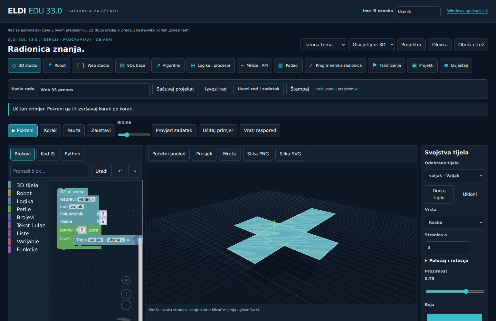
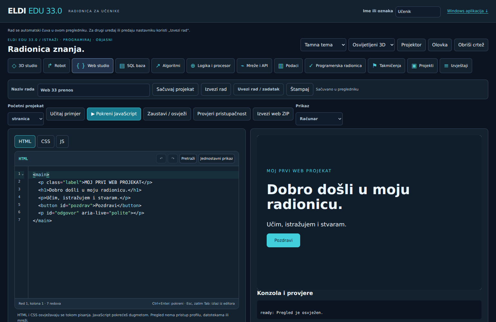

Windows instalacija
Kompletna aplikacija s prečicom, lokalnim programskim alatima i sadržajem za rad bez interneta.
Preuzmi EXE ↓Prenosivi EXE bez instalacije ↗MATEMATIKA + INFORMATIKA / 5–9. RAZRED
Sastavi blokove, pokreni 3D scenu, istraži geometriju i napravi vlastiti projekat. ELDI EDU 33.33 povezuje učenje i stvaranje.
Web radionica radi bez naloga. Windows aplikacija uključuje i Python, C, C++, Javu, Scratch i postojeće zbirke.

NOVO U 33.33
35 vođenih cjelina, zadaci na tri nivoa, čas od 45 minuta i stvarni projekti.
Razred, tema, objašnjenje, primjer i vođeni čas.
02Izaberi nivo i ponovi ono što ti treba.
03Lični izazov: 10 zadataka i 20 minuta.
04Blokovi, stvarni 3D modeli i matematička mjerenja.


ZA UČENIKE
Izaberi radionicu ili otvori Projektne zadatke. Rad se čuva na uređaju; za predaju nastavniku koristi „Izvezi rad“.
Više tijela, blokovi, kosi presjeci, mreže i snimljeni koraci izvođenja.
↱Tri staze, senzori, petlje i dolazak do cilja.
{ }HTML, CSS i JavaScript. Prikaz telefona, konzola i ZIP tvoje stranice.
▤Stvarna lokalna SQLite baza, deset zadataka i uvoz/izvoz baze.
↗Sortiranja, pretraga, stek, red, stablo, graf i rekurzija.
⊕Kola, tabele istinitosti, binarni brojevi i model procesora.
⌁Put poruke kroz mrežu i lokalni ogledni HTTP zahtjevi.
▥CSV, filteri, prosjek, medijana, grafikon i Python kod analize.
✓Pronađi grešku, napiši test i provjeri ispravku.
⚑Matematika i informatika po razredima, vrijeme i rezultat.
▣Početne upute, provjere, vlastiti projekti i predaja datotekom.
≡Automatski bodovi, nastavnički komentar, CSV i štampa.
OD IDEJE DO REZULTATA
Izvršavaj korak po korak, pogledaj varijable i vrati se kroz snimljena stanja. Promijeni vrijednost, uporedi rezultat i objasni zašto se promijenio.


ZA NASTAVNIKE
Učenicima pošaljite ovu stranicu. Odaberite radionicu, zadajte projekat i dogovorite naziv izvezene datoteke.
Otvorite radionicu na školskom računaru i provjerite prikaz. Za Python, C/C++ i Javu instalirajte Windows izdanje.
Učenici otvaraju radionicu, unose oznaku i biraju Projektne zadatke. Za demonstraciju uključite Projektor i Olovku.
Učenik bira „Izvezi rad“. Nastavnik uvozi rad, pregleda rezultat i dodaje komentar ili zasebnu ocjenu.
Radionica čuva lokalni rad. Zasebna online učionica omogućava prijavu, zadatke i predaju nakon jednokratne PHP/MySQL instalacije. Projekte predajte izvezenom JSON datotekom. Automatske provjere ne zamjenjuju nastavnički pregled objašnjenja, dokaza i smisla projekta.
ELDI EDU 33.33 / WINDOWS 10 I 11 · X64
Kompletna aplikacija s prečicom, lokalnim programskim alatima i sadržajem za rad bez interneta.
Preuzmi EXE ↓Prenosivi EXE bez instalacije ↗Prenosiva aplikacija, postojeće zbirke i Scratch materijali, nove radionice, web paket i upute.
Preuzmi kompletan ZIP ↓Sve pojedinačne datoteke i SHA256 ↗Izdanje nije digitalno potpisano. Na školskim računarima instalacija i pokretanje podliježu pravilima administratora. Tačne veličine datoteka navedene su na GitHubu.
Studio 33: 3D blokovi, robot, web, SQL, algoritmi, logika, mreže, CSV obrada, programerske JS vježbe, takmičarska priprema i projektni paketi. Za prvo otvaranje potreban je internet. Dugmetom Rad bez interneta preuzmite radionicu za ovaj uređaj. Online učionica i AI trebaju vezu.
Za ugrađene Python, C, C++ i Java alate, Scratch, postojeće knjige i zbirke te cjelovit rad bez interneta. Windows aplikacija uključuje i novi Studio 33.
Web rad ostaje u lokalnoj bazi preglednika. Brisanje podataka preglednika ili privatni režim može ukloniti rad. Na kraju časa izvezite rad u JSON i sačuvajte ga u svojoj mapi.
Da. Izvezite rad, prenesite JSON datoteku i uvezite je u drugom pregledniku ili Windows Studiju 33. Samo otvaranje istog linka ne prenosi prethodni rad.
Kocka, kvadar, pravilna prizma i piramida imaju animaciju rasklapanja po šarkama. Valjak i kupa imaju razmjerne ravne mreže. Lopta nema tačnu ravnu mrežu bez deformacije. Zakrivljeni presjeci u 3D sceni prikazani su poligonalnom aproksimacijom.
To su originalni ELDI zadaci za vježbu. Rezultati su lokalni i nisu službena rang-lista ili kriptografski ovjerene potvrde.
PODRŠKA
U prijavi navedi verziju 33.33, radionicu i korake. Prije javne prijave ukloni imena i privatne podatke učenika.